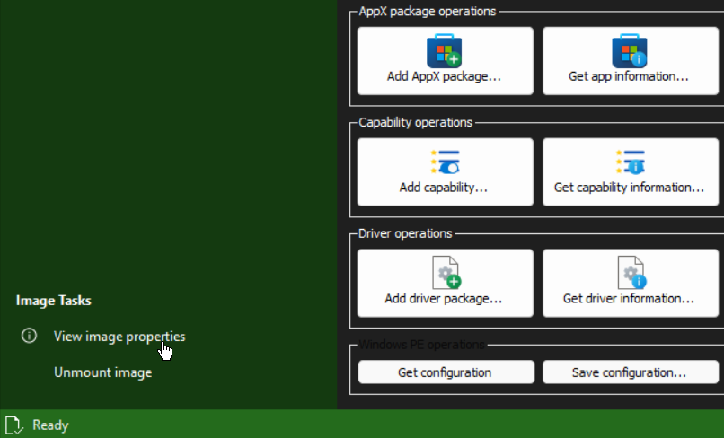
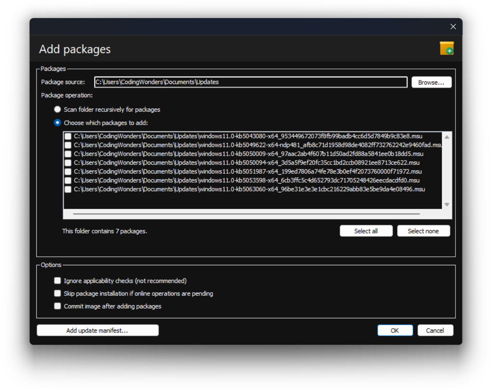
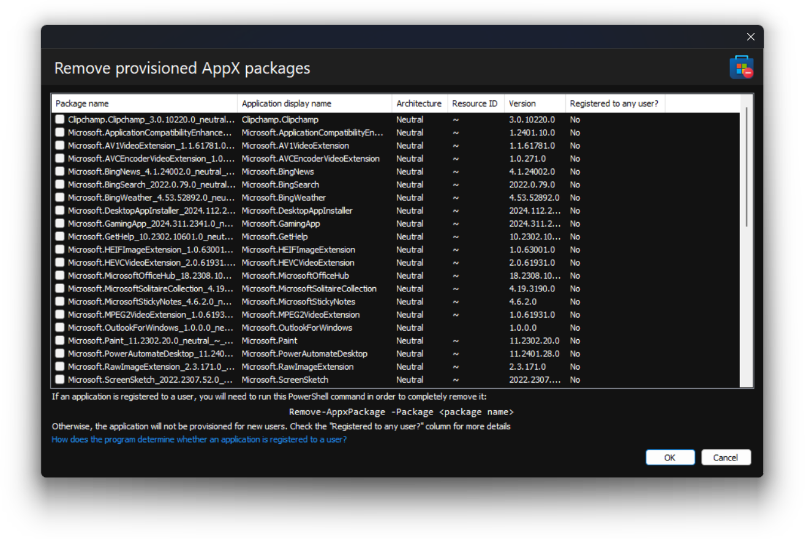

Hagamos que tu imagen de Windows sea tuya.
Conociendo nuestra imagen montada
Antes de proceder a modificar nuestra imagen de Windows, primero obtendremos información de ella, para saber con qué estamos trabajando. Esto se puede hacer con los numerosos cuadros de diálogo de información disponibles en este programa. Obtendremos información general sobre nuestra imagen, como su nombre y su tamaño, yendo aquí (cambia primero a la sección IMAGEN en el lado izquierdo):
Veremos la siguiente información:

Esta información se actualizará después de confirmar la imagen, pero primero empezaremos a hacer cambios.
Modificando la imagen de Windows a nuestro gusto
Realizaremos una serie de modificaciones en nuestra imagen de Windows. Imaginemos este ejemplo: estamos trabajando con una imagen de Windows 11 Pro que luego desplegaremos en los equipos de nuestra organización. Queremos lo siguiente:
- Soporte integrado para una imagen de Windows Subsystem for Linux (WSL) y para máquinas virtuales con Hyper-V
- Reducir la cantidad de bloatware, pero lo suficiente para evitar romper el sistema destino
La imagen con la que empezamos está bastante desactualizada, así que también la actualizaremos. Este recorrido separará cada tarea en su propia sección, para que puedas seguir el proceso más fácilmente.
Habilitar las características
Tanto Hyper-V como Windows Subsystem for Linux son características que se pueden habilitar en una imagen de Windows. Para ver su estado, haremos clic en el botón "Obtener información de características...". Veremos una lista de todas las características en la imagen. Para reducir los resultados de la búsqueda, simplemente escribimos nuestra consulta en el cuadro de búsqueda, así:

En este ejemplo, ambas están deshabilitadas, así que habilitémoslas. Podemos hacerlo haciendo clic en el botón "Habilitar característica...". Después, seleccionamos las características a habilitar, más las opciones, y hacemos clic en Aceptar. En este ejemplo, continuaremos con las siguientes opciones:

A continuación un resumen rápido de las opciones seleccionadas:
- Habilitar todas las características parentales nos ayuda a ahorrar tiempo habilitando todas las características relacionadas con las que seleccionamos. Por ejemplo, es más rápido seleccionar
Microsoft-Hyper-V-Ally habilitar esta opción que seleccionar todas las características de Hyper-V una por una. Haciendo lo primero se habilitarán todas automáticamente - Confirmar imagen después de habilitar características guardará automáticamente los cambios en nuestra imagen después de habilitar las características. Es una buena opción confirmar los cambios tras cada tarea de imagen, porque será más fácil volver a una versión anterior si un cambio no funciona
Nota:
Una característica puede aparecer en esta lista como Removed. En ese caso, necesitas proporcionar una fuente. La fuente, en muchos casos, es la carpeta sxs en los medios de instalación de Windows. Monta el archivo ISO y especifica la carpeta sources\sxs en el cuadro de diálogo del selector de carpetas. Haz este proceso así:

En nuestro ejemplo no es necesario, pero puede serlo cuando lo hagas por tu cuenta.
Para que esto funcione, tanto tu imagen de Windows como los medios de instalación deben tener la misma versión. Por eso se recomienda hacer esto primero. De lo contrario, tendrás que esperar hasta instalar tu imagen de Windows para habilitar una característica usando Windows Update, o usar medios actualizados.
Después de completar la tarea, puedes volver al diálogo de información de características y comprobar el estado de las características que seleccionaste. Ahora continuaremos con la actualización de la imagen de Windows.
Agregar paquetes
Ahora, actualicemos nuestra imagen con los últimos paquetes de actualización. Puedes descargarlos desde el Catálogo de actualizaciones de Microsoft. Tras esto, haremos clic en el botón "Agregar paquete...". Luego, selecciona la ubicación donde están tus archivos de actualización. Finalmente, selecciona los que quieras instalar y haz clic en Aceptar:
En este ejemplo, queremos agregar todos los paquetes que se encontraron. Es mejor agregarlos en pequeños lotes, ya que la operación es bastante larga, y también confirmaremos los cambios después de cada lote. Ten a mano bebidas y aperitivos, o haz otras cosas, mientras se realiza la tarea.
Nota:
DISMTools soporta la adición tanto de archivos CAB como de archivos MSU. Para usuarios más avanzados, también soporta agregar manifiestos de actualización independientes.
Más tarde puedes ir al diálogo de información de paquetes para ver los paquetes instalados recientemente. Puedes obtener más información sobre esta tarea en la documentación de Ayuda.
Eliminar aplicaciones de la Tienda
Una de las muchas formas de bloat en Windows consiste en aplicaciones de la Tienda que quizás no quieras. Aunque puedes eliminarlas después de instalar el sistema, también puedes instalar el SO con esas aplicaciones ya eliminadas. Para ello, haremos clic en el botón "Eliminar paquete AppX". En este diálogo, seleccionamos las aplicaciones a eliminar y haremos clic en Aceptar:
Nota:
Asegúrate de saber qué vas a eliminar. Cada vez más componentes del sistema en Windows dependen de algunas de estas aplicaciones hoy en día, y podrías romperlos si no tienes cuidado. Puedes buscar los nombres de las aplicaciones, que se encuentran en la segunda columna, en línea para determinar si deseas eliminarlas.
Puedes realizar más tareas si lo deseas, pero continuaremos con el paso final: el despliegue del sistema operativo.
He terminado. ¿Ahora qué?
Después de personalizar tu imagen, puedes continuar de 2 maneras:
- Por tu cuenta, o
- Con la ayuda de la etapa restante de este recorrido
Si quieres continuar con el recorrido, haz clic en el botón Etapa 3 en la parte superior derecha para ir a su versión en texto.
Si quieres continuar el recorrido en formato de video, haz clic aquí.
Si te perdiste en algunos pasos, puedes volver a Etapa 1. Luego, continúa con la Etapa 3.